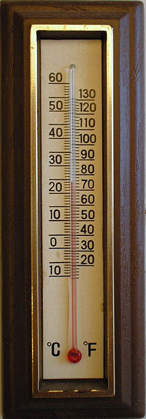
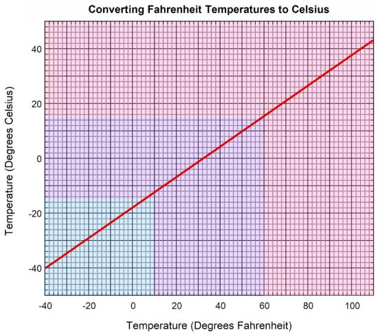

Converting celsius into fahrenheit, and vice-versa, is a necessity for almost everyone who travels to the US, and for Americans traveling almost everywhere outside the US. True enough, technology provides answers: online converters, pocket calculators or cellphone apps, and the possibility of setting one’s electronic thermometer to whichever unit measure one needs.
Mental calculation is somewhat intimidating (you may feel you want to skip this section, which details the intimidation, thereby proving it. Please stay with us). The conversion formula from F° to C° is:
subtract thirty-two and divide by one point eight
For instance, 50 F° converts to 10 C° (50-32 = 18, which divided by 1.8 yields 10, hence 10 C°). The formula requires division by 1.8, which is a notorious cognitive obstacle.
Let’s be completely frank: I cannot divide three figures numbers by 1.8 in my head! No way!
In previous, not so remote technological landscapes, one would employ graphic devices, such as thermometers with both readings, C° and F°, side by side
 Image by Nono64 at Wikipedia, with Licence CC Share-AlikeAnother possibility is to check a conversion table.
 Unattributed image{kind=link}
We can train ourselves behaviorally by living for a while in a F° environment if we come from a C° environment, and vice-versa, and slowly recalibrate our scale, the way many Europeans did when their national currencies were replaced by the Euro: after a while, those who started out their lives dealing in I-Lira or D-Mark, ended up thinking in Euros, to some extent. But this takes time.
Much as we welcome all these low and hi-tech solutions, it is an obvious fact that the availability of quick mental conversion would be preferable. It would render unit measures to some extent transparent to us. Consider, as a designer, the standard user situation: listening to a weather forecast on the radio when driving your car. You better not reach for your cellphone or notepad for executing the calculation; you have no double graduation thermometer or graph to look at; and even if you remember the conversion formula, you would have a hard time applying it.
A simple way to overcome the difficulty is to replace the exact, taxing formula with a cognitively simpler approximation. At this very point we need to introduce a BIG DISCLAIMER, which will bring us to the point of our discussion.
Disclaimer: “Do NOT use our approximation when temperature measurements are vital (e.g. you need to boil water, protect your plants from freezing, or measure your children’s temperature). The approximation is in many ways imprecise and only provides first guidance in understanding temperatures. This is an academic exercise, and we should not be liable for any loss or damage created by an application of the approximation…”
The approximation takes advantage of the fact that thirty-two is an excess of thirty, and one point eight is a defect of two. Thus, if you want to have an idea of what 50 F° are like, subtract 30 and divide by 2, easy enough: (50-30)=20, and 20/2=10. We did it in writing, but you can easily perform it in your mind.
Yes, this one I can indeed!
We can at this point propagate the approximation to graphic devices, and edit convenient simplified double scale thermometers and conversion graphs.
The point of our exercise is the crucial design tradeoff between readability and truthfulness. We want to design accurate thermometers, true enough. But we want also to make temperature calculations easily available to the largest number of travelers, tourists, migrants. How do we choose? Our bet could be that informing in an approximate way the everyday decisions of hundred of thousands of people who need quick conversions (“Should I wear heavy coats? The thermometer reads 20 F°”) vastly compensate the few decisions requiring precise conversions, even those made in critical situations (“The baby’s temperature is 39 C°, should we call a doctor?”). Design involves responsibilities.
Footnote for further thought: is a conversion graph uselessly 2D? Is the thermometer is better than the graph? Conversions are functions; if the conversion is linear the 2D graph does seem to be useless.